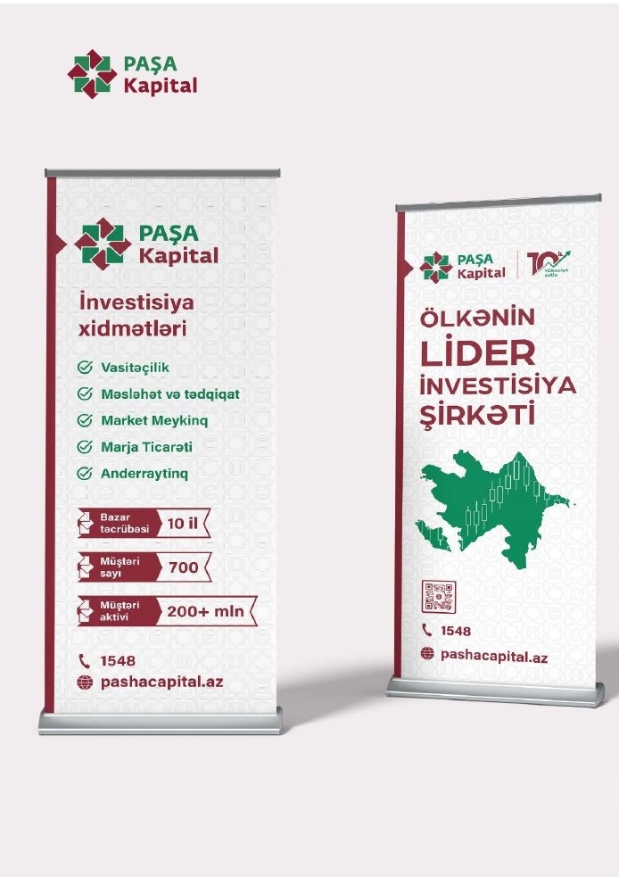
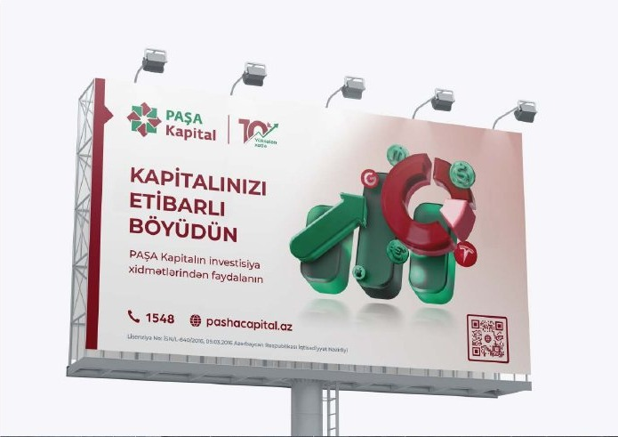
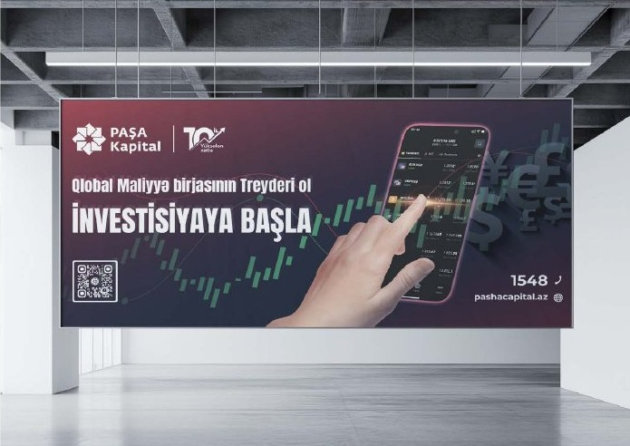
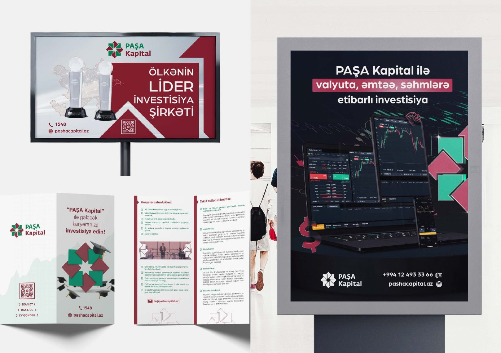

Bir əsas mesaj
Kompozisiya auditoriyanın ilk baxışda anlamalı olduğu fikri önə çıxarır.
Campaign Design
İnvestisiya məhsulları və kommunikasiya mesajları üçün vahid brend dilində hazırlanmış rəqəmsal və çap materialları.

01 / Ümumi baxış
Modul grid, brend rəngləri və aydın mesaj iyerarxiyası müxtəlif ölçülü poster, banner və sosial formatlar arasında davamlılıq yaradır.
İnvestisiya məhsulları və kommunikasiya mesajları üçün vahid brend dilində hazırlanmış rəqəmsal və çap materialları.
Başlıq, əsas vizual və CTA arasında qurulan iyerarxiya mesajı həm böyük reklam səthində, həm də kiçik rəqəmsal formatda aydın saxlayır.
02 / Yanaşma
Kompozisiya auditoriyanın ilk baxışda anlamalı olduğu fikri önə çıxarır.
Fotoqrafiya və qrafik elementlər diqqəti məhsula və ya təklifə yönəldir.
Sistem outdoor, poster, banner və sosial ölçülərə uyğunlaşır.
03 / Visual Direction




04 / Design System
Qısa və uzaqdan oxunan mətn iyerarxiyası.
Mesajı dəstəkləyən aydın fokus nöqtəsi.
Növbəti addımı göstərən görünən çağırış.
05 / Növbəti
Növbəti layihəNaxçıvanbank Outdoor↗